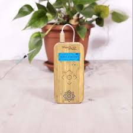
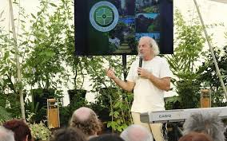

La Musique des Plantes
Écoutez la mélodie secrète du monde végétal et laissez-vous porter par ses vibrations apaisantes.
Le chant invisible de la Nature
Saviez-vous que les plantes émettent des impulsions électriques ? Grâce à un appareil spécifique doté de capteurs, ces micro-courants sont traduits en notes de musique en temps réel. Le végétal devient alors le compositeur de sa propre mélodie.
Reconnexion au Vivant
Prenez conscience de la sensibilité du monde végétal et recréez un lien profond avec la nature qui vous entoure.
Relaxation Profonde
Les fréquences générées par les plantes ont un effet calmant immédiat sur le système nerveux, idéal pour la méditation.
Bain Vibratoire
Plongez dans un espace sonore unique où chaque mélodie aide à rééquilibrer vos propres énergies.
Le lien naturel avec le Cuivre
Ma découverte de la musique des plantes n'est pas un hasard. Pour capter les signaux électriques d'une plante de manière optimale, on utilise souvent des électrodes… en cuivre ! Cet excellent conducteur fait le pont entre le végétal et notre monde sonore.
Intégrer cette pratique à mon atelier m'a paru évident. L'artisanat du cuivre et l'écoute des plantes partagent la même essence : capter l'énergie invisible, la canaliser, et la transformer en quelque chose de beau et d'apaisant.

Vivre l'expérience sonore
Une immersion auditive et vibratoire douce, au rythme de la nature.
La Rencontre
Nous choisissons ensemble une plante dans l'atelier (ou vous pouvez apporter la vôtre). Nous prenons un instant pour nous ancrer et nous présenter à elle.
La Connexion
Je place délicatement les capteurs (souvent une pince sur une feuille et une sonde dans la terre). L'appareil commence alors à traduire l'activité de la plante.
Le Concert Végétal
Installez-vous confortablement. Pendant 30 à 45 minutes, vous écoutez la composition unique de la plante. C'est un moment de méditation et de lâcher-prise total.

Envie d'entendre ce que la nature a à vous dire ?
Réserver votre voyage sonore